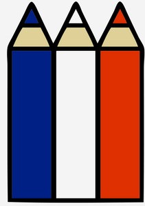
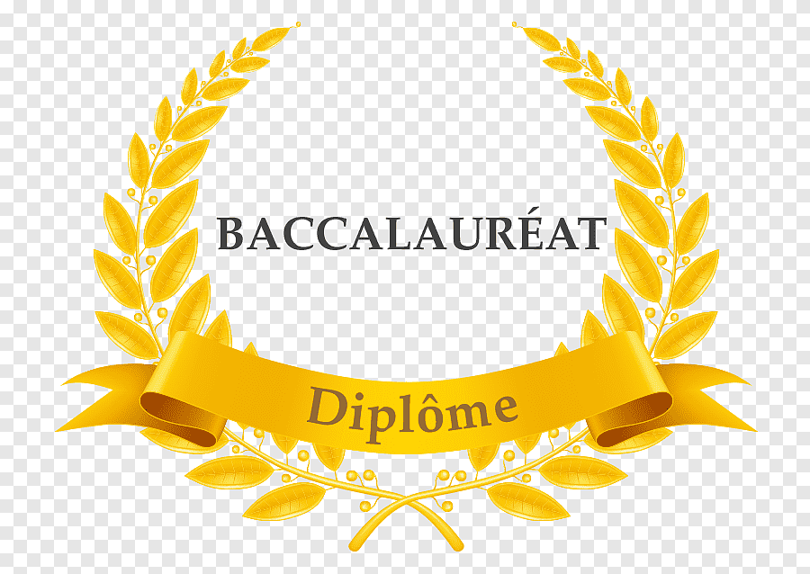

Qui suis-je ?
Actuellement intervenant et responsable informatique dans une école primaire, je conçois des sites web en parallèle de mon métier depuis plus d'un an. Formé en autodidacte, je souhaite désormais me consacrer à plein temps à la conception de sites et d'applications. J'ai aussi été en même temps maître suppléant pour la classe de Petite section dans cette même école.
Pour ces différents postes, j'ai su faire preuve d'une grande polyvalence, d'une forte capacité à m'adapter, à travailler en équipe de manière harmonieuse (auprès d'une équipe de 8 enseignantes), d'une bonne capacité à assimiler et chercher les informations pertinentes, en plus d'un sens aigu de la pédagogie et un certain goût pour la veille technologique (hardware et software).
Expériences
-
Conception de sites web, Arles2020 - Aujourd'hui
-
Site de commande bauxt-des-sens.com réalisé pour le compte d'une masseuse indépendante et conçu avec le framework NextJS.
Front : React Intersection-Observer Framer-Motion Styled-Components Smooth Scrolling -
Site de commande estelle-betry-psychomotricite.vercel.app réalisé pour le compte d'une psychomotricienne libérale et conçu aussi avec le framework NextJS.
Front : React Locomotive-Scroll Gsap Styled-Components -
Site de commande audreyetienne.github.io réalisé pour le compte d'une docteure en économie, et conçu et pensé comme une single-page-app permettant une navigation ultra rapide.
Front : Vanilla JS HTML CSS -
Site de e-commerce luminairescavallo.herokuapp.com. Ce projet consistait en la refonte d'un site de e-commerce déjà existant d'un fabricant de lampe. L'implémentation du paiement en ligne ne pouvant se faire qu'avec Paypal ou Stripe, il n'est pas utilisé, mais a été extrêmement formateur.
Front : React React-Redux Framer-Motion Styled-Components Bootstrap
Back : Express NodeJS MongoDB Axios - Site de e-commerce fictif conçu dans le cadre d'un cours en ligne sur UDEMY concernant le MERN stack (avec certification).
-
Site de commande bauxt-des-sens.com réalisé pour le compte d'une masseuse indépendante et conçu avec le framework NextJS.
-
Enseignant et responsable informatique, Arles2015 - Aujourd'huiÉcole primaire St-Etienne
- Supervision, achat, installation et maintenance du matériel informatique de l'école
- Enseignement et conception des cours d'informatique auprès d'un public allant de la Moyenne Section jusqu'au CM2 (avec initiation à la programmation).
-
Maître suppléant, Bouches-du-Rhône2010 - 2019DDEC d'Aix-Arles
- J'ai exercé comme maître d'école dans les écoles primaires catholiques d'Arles, St-Martin de Crau, Tarascon, et Cabannes auprès de tous les niveaux de classe.
-
Intervenant informatique, Arles2009 - 2010École primaire St-Vincent de Paul
- Enseignement de l'informatique dans l'école primaire St-Vincent de Paul (Arles) auprès des classes allant du CP au CM2.
Diplômes
-
Master 2 Français Langue etrangèreUniversité d'Avignon2011
-
 Licence Lettres, Langue et Culture Étrangère (LLCE) AnglaisUniversité d'Avignon2006
Licence Lettres, Langue et Culture Étrangère (LLCE) AnglaisUniversité d'Avignon2006 -
DEUG Sciences de la matière (physique, maths, chimie)Université d'Avignon2003
-
Baccalauréat Général ScientifiqueLycée Pasquet, Arles2001